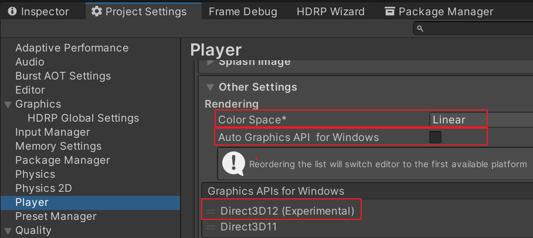
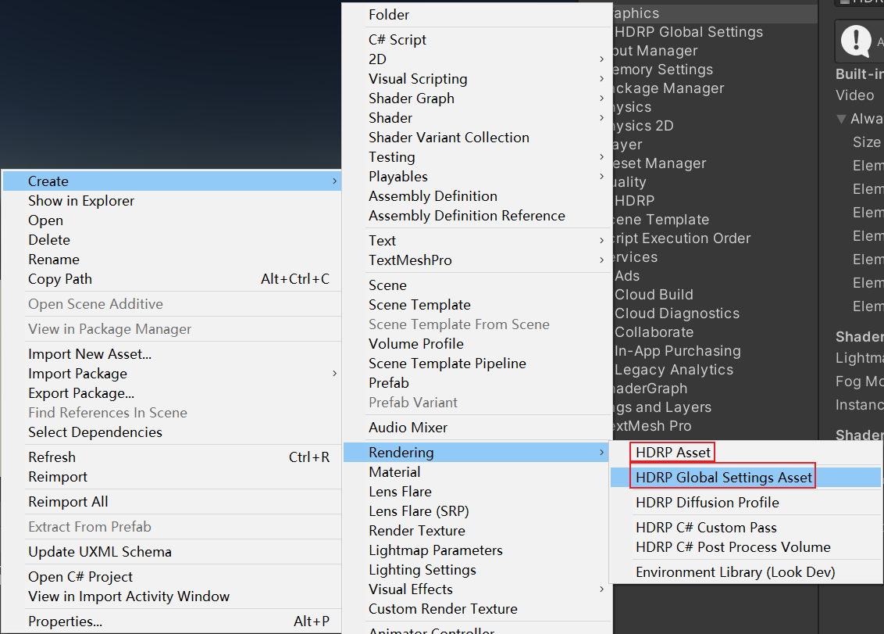
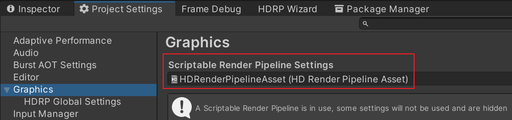
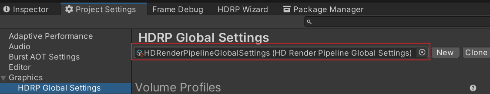
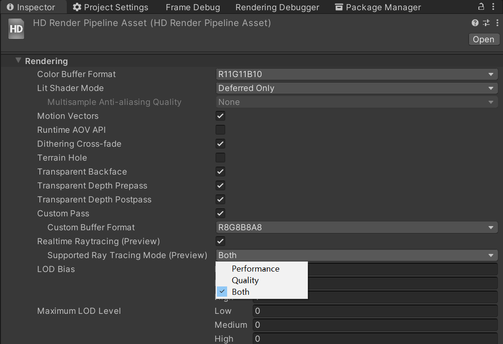
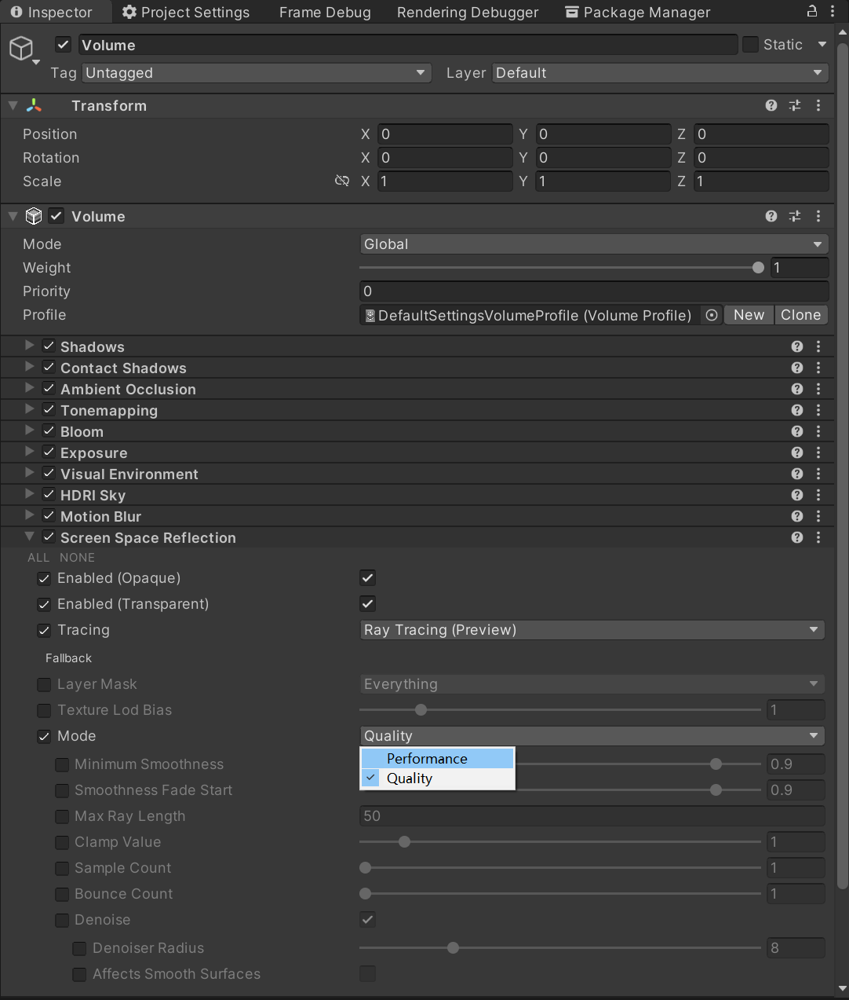
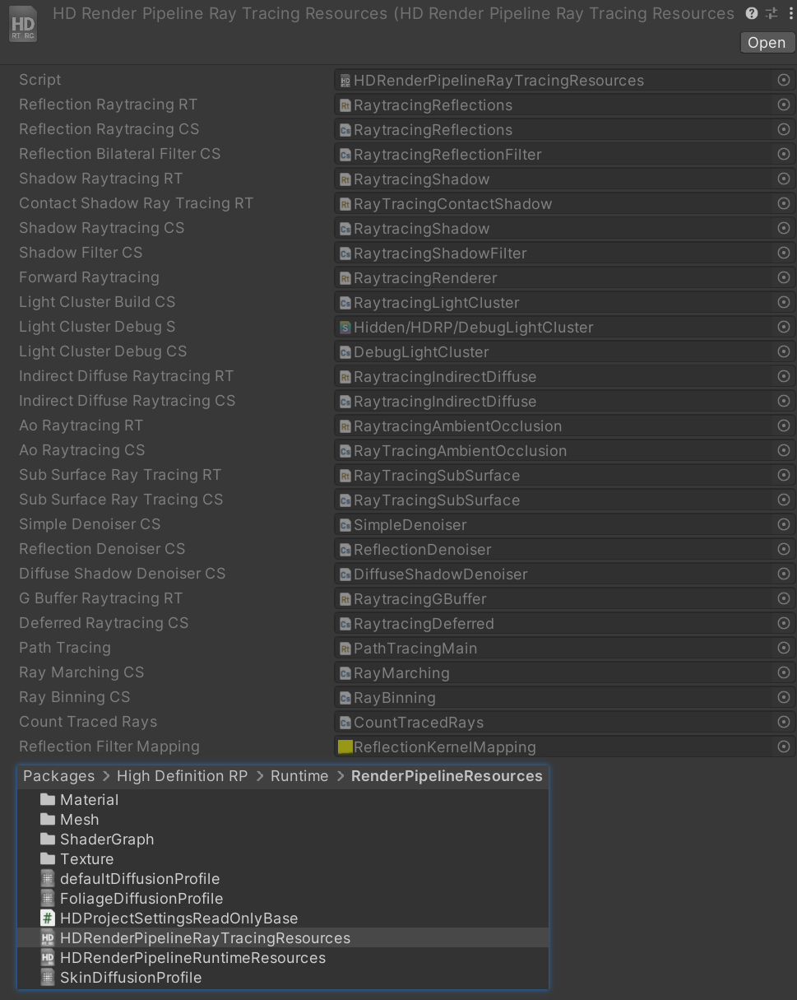

Unity Raytracing
HDRP
setup
requirements
硬件需要支持 Ray Tracing。使用 API SystemInfo.supportsRayTracing 可以查询当前系统是否支持。
auto setup
- 安装 HDRP package
- 打开 HDRP 设置向导 Window/Rendering/HDRP Wizard, 如果有设置错误，直接点击 FixAll
manual setup
enable ray tracing for unity
颜色空间切换到 Linear
Auto GraphicsAPI 取消勾选
切换到 D3D12

禁用 Static Batching

enable ray tracing for hdrp
创建 HDRP HDRenderPipelineGlobalSettings 和 HDRP Render Pipeline Resources Asset

配置 HDRP Render Pipeline Resources Asset 和 HDRP Render Pipeline Resources Asset


check
Edit/Rendering/Check Scene Content for HDRP Ray Tracing 执行该命令, 若日志信息中没有报错，则说明 RayTracing 配置正确。
Ray tracing and Meshes
开启 Ray tracing 后， HDRP 会自动为 ray tracing 创建 acceleration structrue. 该结构允许 Unity 实时为场景中 Meshes 计算 ray tracing。
ray tracing 可以以如下几种方式改变场景中 Meshes 的外观：
- 如果 Mesh 的材质没有 HDRenderPipeline tag, HDRP 不会将其加入到 acceleration structrue，也不会为该 mesh 使用任何 ray traced 效果。
- 如果 Mesh 被赋予了一个 Decal Material, HDRP 不会将其加入到 acceleration structrue，该 mesh 将不会出现在场景中。
- 如果 Mesh 包含一组材质，其中有的材质为单面，有的为双面，HDRP 会将所有这些材质标记为双面。
Ray tracing light culling
Ray tracing 要求 HDRP 以不同的于光栅化的方式对 lights 进行 cull。对于光栅化，只有影响当前 frustum 的光源是有用的。然而，ray tracing 会使用屏幕外的数据来实现各种效果(如 反射)，HDRP 需要考虑影响屏幕外几何体的光源。因此，HDRP 定义了一个围绕 camera 的范围，在该范围内收集光源，可以使用 LightClusterVolume override 来控制该范围。精确设置该范围非常重要，范围过大会使 HDRP 包含更远的光源，会导致 ray tracing 的 light culling 性能问题。
Ray tracing mode
HDRP 包含了两种 ray trcing 模式，其定义了如何计算特定的 ray-traced 效果：
- Performance 该模式用于实时应用程序。如果你选择该模式，ray-traced effects 会包含预设，你可以改变预设来平衡性能和质量。
- Quality 该模式用于技术 demo 和那些希望获得最佳质量的应用程序。
根据当前使用的不同的 ray tracing 模式，HDRP 会为一些 ray-traced effects 暴露不同的属性。你可以在 project level 也可以在 effect level 上来改变 ray tracing 模式。
在 HDRP Asset 中可以在 Project Level 上，改变 ray tracing 模式，如下：

如果选择 Both 选项，你可以为每种 ray-traced effect 改变 ray tracing mode.
在场景中，找到包含 Volume 组件的物体，Volume 若包含了 ray-traced effect, 你可以修改该 effect 的 mode 属性来修改 ray tracing mode, 如下：

Limitations
HDRP ray tracing 有如下限制：
- 不支持顶点动画(vertex animation)
- 不支持贴花(decals)
- 不支持体积雾(volumetric fog)
- 不支持细分着色器(tessellation)
- 不支持 per pixel displacement (parallax occlusion mapping, height map, depth offset).
- 不支持 VFX 和 Terrain
- 不支持对 shadows 进行精确的 culling，ray tracing 实现的效果可能会丢失阴影
- 不支持 MSAA
- 不支持 Graphics.DrawMesh.
- 渲染 Reflection Probes 时，不支持 Ray tracing。
- 不支持正交投影。开启正交投影，半透明材质渲染、体积渲染、平面反射渲染可能会有问题。
- Ray Traced 效果 和 屏幕空间效果不会递归地出现。例如，在 ray-traced 反射中无法看到屏幕空间的全局光照。
implementation
初始化
com.unity.render-pipelines.high-definition@12.1.6\Runtime\RenderPipeline\HDRenderPipeline.cs
public HDRenderPipeline(HDRenderPipelineAsset asset) { // ....... if (m_RayTracingSupported) { InitRayTracingManager(); InitRayTracedReflections(); InitRayTracedIndirectDiffuse(); InitRaytracingDeferred(); InitRecursiveRenderer(); InitPathTracing(m_RenderGraph); InitRayTracingAmbientOcclusion(); } }
internal void InitRayTracingManager() { // RayCountManager 用于管理射线的数量。不同的效果，可以使用不同数量的射线， // Tips: 该功能目前还没有生效 m_RayCountManager = new RayCountManager(); m_RayCountManager.Init(m_GlobalSettings.renderPipelineRayTracingResources); // Ray Tracing Light Cluster // TODO m_RayTracingLightCluster = new HDRaytracingLightCluster(); m_RayTracingLightCluster.Initialize(this); }
com.unity.render-pipelines.high-definition@12.1.6\Runtime\RenderPipeline\Raytracing\HDRenderPipeline.RaytracingReflection.cs
//在 RayTracedReflection 的初始化中，定义好 RayTracing 需要使用的 shader 变量 void InitRayTracedReflections() { ComputeShader reflectionShaderCS = m_GlobalSettings.renderPipelineRayTracingResources.reflectionRaytracingCS; ComputeShader reflectionBilateralFilterCS = m_GlobalSettings.renderPipelineRayTracingResources.reflectionBilateralFilterCS; m_RaytracingReflectionsFullResKernel = reflectionShaderCS.FindKernel("RaytracingReflectionsFullRes"); m_RaytracingReflectionsHalfResKernel = reflectionShaderCS.FindKernel("RaytracingReflectionsHalfRes"); m_RaytracingReflectionsTransparentFullResKernel = reflectionShaderCS.FindKernel("RaytracingReflectionsTransparentFullRes"); m_RaytracingReflectionsTransparentHalfResKernel = reflectionShaderCS.FindKernel("RaytracingReflectionsTransparentHalfRes"); m_ReflectionAdjustWeightKernel = reflectionBilateralFilterCS.FindKernel("ReflectionAdjustWeight"); m_ReflectionUpscaleKernel = reflectionBilateralFilterCS.FindKernel("ReflectionUpscale"); }
renderPipelineRayTracingResources 数据存储在如下路径文件中：

Render
com.unity.render-pipelines.high-definition@12.1.6\Runtime\RenderPipeline\HDRenderPipeline.cs
protected override void Render(ScriptableRenderContext renderContext, List<Camera> cameras) { // culling loop static bool TryCull(Camera camera, HDCamera hdCamera, ScriptableRenderContext renderContext, SkyManager skyManager, ScriptableCullingParameters cullingParams, HDRenderPipelineAsset hdrp, ref HDCullingResults cullingResults) { // 开启 ray tracing 后会对Culling参数进行重写 static void OverrideCullingForRayTracing(HDCamera hdCamera, Camera camera, ref ScriptableCullingParameters cullingParams) } // add render request // add HDProbeRenderRequests // execute render request ExecuteRenderRequest(renderRequest, renderContext, cmd, AOVRequestData.defaultAOVRequestDataNonAlloc); { // 为 ray tracing 构建加速结构 BuildRayTracingAccelerationStructure(hdCamera); // 为 ray tracing 执行culling TODO CullForRayTracing(cmd, hdCamera); // 执行 RenderGraph ExecuteWithRenderGraph(renderRequest, aovRequest, aovBuffers, aovCustomPassBuffers, renderContext, cmd); { // TODO RenderPrepass(m_RenderGraph, colorBuffer, lightingBuffers.sssBuffer, vtFeedbackBuffer, cullingResults, customPassCullingResults, hdCamera, aovRequest, aovBuffers); } } }
com.unity.render-pipelines.high-definition@12.1.6\Runtime\RenderPipeline\Raytracing\HDRaytracingManager.cs
internal void BuildRayTracingAccelerationStructure(HDCamera hdCamera) { // 获取场景中所有的灯光 fetch all the lights in the scene // 1. 判断灯光是否开启ray tracing shadow，并且是否开启了屏幕空间阴影 // m_RayTracedShadowsRequired |= (hdLight.useRayTracedShadows && screenSpaceShadowsSupported); // m_RayTracedContactShadowsRequired |= (hdLight.useContactShadow.@override && hdLight.rayTraceContactShadow); // 2. 判断灯光是否有位置变化。TODO // Tips: ReflectionProbe 也被当作RayTracing 的光源 // 判断下列各种效果的设置中是否开启了RayTracing // AmbientOcclusion 开启了 rayTracing，并且camera开启了ScreenSpaceAO // ScreenSpaceReflection 自身开启了或开了半透明物体的反射，并且开启了 rayTracing，并且camera开启了 ssr // GlobalIllumination 自身开启了，并且开启了 rayTracing, 并且 camera 开启了SSGI // RecursiveRendering 自身开启了 // SubSurfaceScattering 开启了 rayTracing，并且camera开启了 SubsurfaceScattering // PathTracing 自身开启了 // 以上任何一个效果开启，就表示需要进行 Ray Tracing了 // 遍历场景中所有区域光源, 为其生成Acceleration Structure // 遍历场景中所有LODGroup，根据摄像机距离获得当前使用的Lod，为对应的MeshRenderer 生成Acceleration Structure // 遍历场景中所有 Renderer, 若还没有为其生成 Acceleration Structure 则为其生成 // RayTracingAccelerationStructure m_CurrentRAS; // 该变量用于存储 Acceleration Structure // AddInstanceToRAS() 函数用于执行具体生成Acceleration Structure 的逻辑 TODO // 构建GPU 端的加速结构数据 m_CurrentRAS.Build(hdCamera.mainViewConstants.worldSpaceCameraPos); }
URP
setup
implementation
Terminology
- RTHandle https://docs.unity3d.com/Packages/com.unity.render-pipelines.core@12.1/manual/rthandle-system-fundamentals.html
- Light Cluster https://docs.unity3d.com/Packages/com.unity.render-pipelines.high-definition@12.1/manual/Ray-Tracing-Light-Cluster.html
- Render Graph https://docs.unity3d.com/Packages/com.unity.render-pipelines.core@12.1/manual/render-graph-system.html
- AOV https://docs.unity3d.com/Packages/com.unity.render-pipelines.high-definition@10.0/manual/AOVs.html
参考资料
- GPU Ray Tracing in Unity – Part 1 http://blog.three-eyed-games.com/2018/05/03/gpu-ray-tracing-in-unity-part-1/
- GPU Ray Tracing in Unity – Part 2 http://three-eyed-games.com/2018/05/12/gpu-path-tracing-in-unity-part-2/
- GPU Ray Tracing in Unity - Part 3 http://three-eyed-games.com/2019/03/18/gpu-path-tracing-in-unity-part-3/
- 探究光线追踪技术及 UE4 的实现 https://www.cnblogs.com/timlly/p/11366199.html